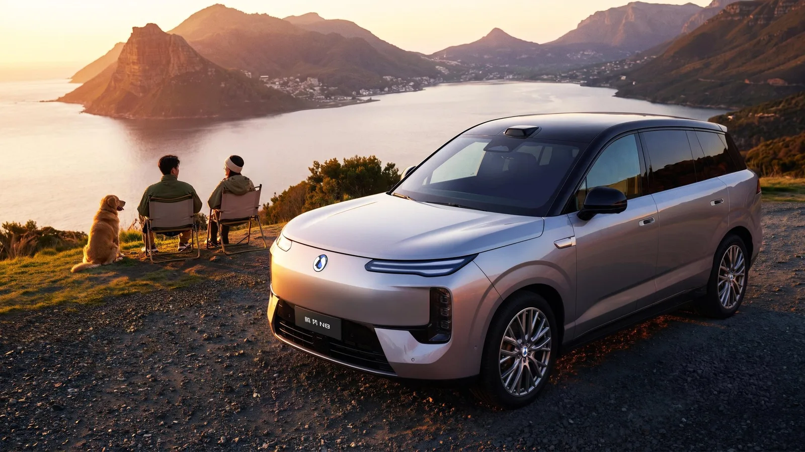
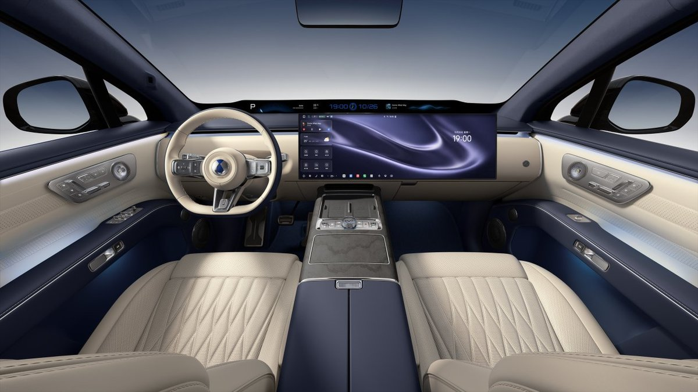

Denza · 新車 · 中國2026-11-12
Denza N8 上市：五人座寬體 SUV，π 式車頭與懸浮車頂
Denza N8 Launched Starting at 269,900 Yuan
騰勢 11 月 12 日正式上市 N8，純電與插電油電兩種動力共 6 個車型，官方指導價 26.99–32.99 萬元人民幣。車長 5,150mm、軸距 3,075mm，用三排座等級的車身只做五人座；純電版 CLTC 續航最高 1,003 km。
設計解析 Design Notes
- 車頭騰勢經典 π-motion 設計語言的電動化演進：發光 logo、箭羽雙燈與星鑽頭燈三層排列。
- 側面一條肩線從車頭延伸到車尾，搭配動感裙線與懸浮車頂，讓大車身看起來輕盈。
- 內裝新一代內裝主打「靜奢美學」，環抱式座艙，前後排扶手連成一體；天際屏＋巨幕雙屏，出風口隱藏。
- CMF8 種車色（4 款雙色）、4 種座艙配色；大面積軟包、麂皮車頂、Nappa 真皮、實木飾板與水晶旋鈕。